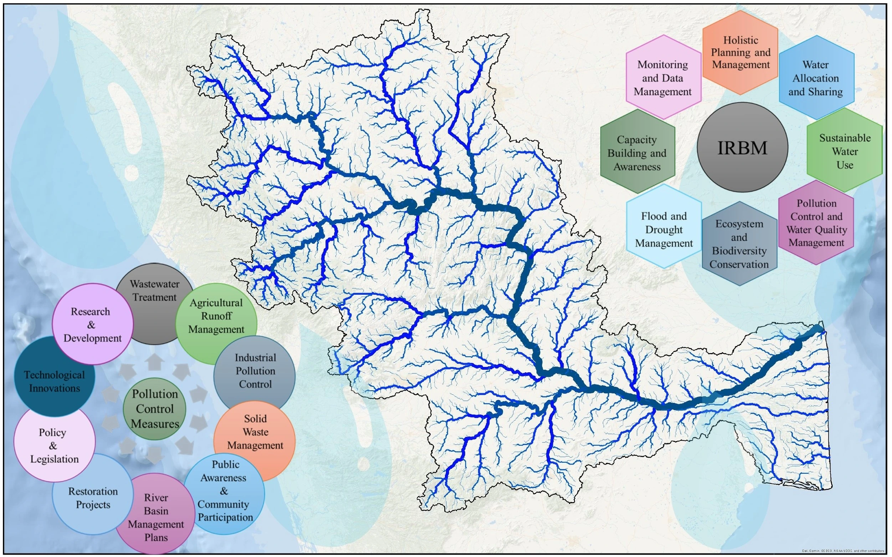

{{data.chairmanMsg}}
• PhD in Water Research
We offer a PhD program in Water Research.
• Postdoctoral Positions
Prospective Postdocs, INSPIRE Fellows, CV Raman Postdocs, and NPDFs are encouraged to contact our faculty members directly to discuss potential opportunities.
• Project Positions
We offer a variety of project-based positions in Water Research. Specific positions available will vary based on the current project needs and requirements.
The river Cauvery is uniquely essential to India for geographical, historical, socio-cultural, and economic reasons. In this reference, the Centre for Cauvery River Basin Management and Studies (cCauvery), a brain trust dedicated to river science and river basin management, was established in 2024 by IISc Bengaluru and NIT Tiruchirappalli, under the supervision of cGanga at IIT Kanpur, the centre serves as a knowledge wing of the National River Conservation Directorate (NRCD). cCauvery is committed to restoring and conserving the Cauvery River and its resources through collating information and knowledge, research and development, planning, monitoring, education, advocacy, and stakeholder engagement.

{{ seminar.Title }}
{{ seminar.DateTime }}
{{ getTruncatedTitle(newsItem.title) }}
{{ getTruncatedTitle(newsItem.title) }}